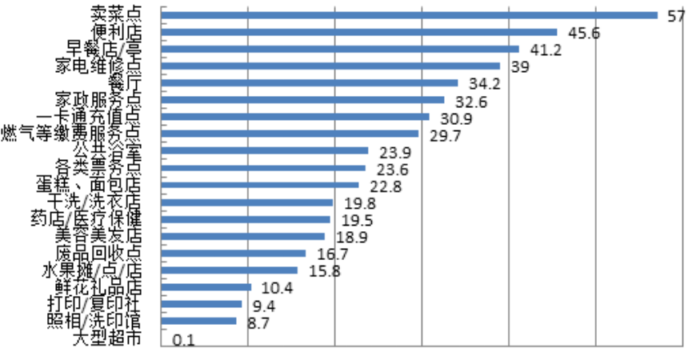
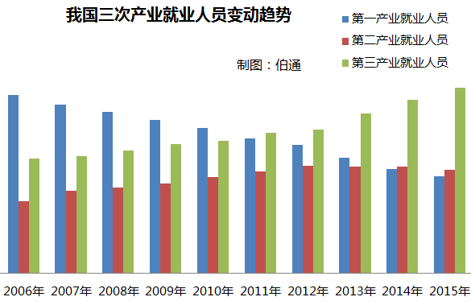
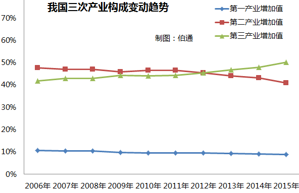
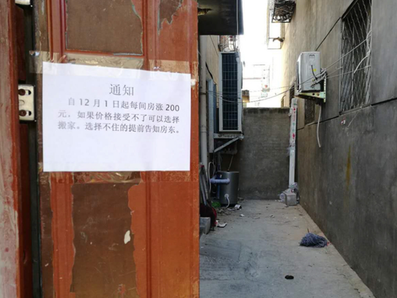

谁来劝劝于大爷
“于谦的爸爸是个大善人，最见不得人受穷。他说天下穷人太多管不过来，但在自己住宅方圆二十里内，不允许有穷人。然后，老爷子把附近的穷人都赶走了。”——郭德纲《怯富贵》
高级的幽默往往暗含格调和褒贬，讽刺更是艺术风骨的支柱。虽是相声，但“赶穷人”这一幕却足以让国人发出会心笑声。
在这个寒冷的冬天，我们不妨聊一下“于大爷现象”。
赶走穷人，于大爷会更幸福吗？
按照相声设定，于大爷位列北京十大富豪，住在二三环之间的四合院里，生活中各种奢华富贵难以尽述。什么是妻妾仆从，哪个叫车水马龙，当真是豪门盛宴，天上人间。
我们假设于老爷子成功将方圆二十里的穷人都赶走了，这就基本上在北京的中心地带造就了一个高达314平方公里的富人区（相当于北京城六区面积总和的五分之一）——总之一国首都不可能是无人区，那留下来的自然非富即贵，起码能入于老爷子的法眼。
那么接下来，于大爷和他的朋友（邻居）们，会遇到一个比较尴尬的问题：他们的生活开始变得不便了。
首先是直观的生活服务不便了。
2016年的一项调查显示，北京居民对于生活服务的需求列表如下：
可以发现，除了一卡通充值点、燃气缴费服务点这种带有“公家”性质的机构，其它绝大多数服务都是需要市场上的私营企业甚至个体户提供的。就拿TOP5的卖菜点、便利店、早餐店、家电维修、餐厅来说，这些行业的从业者，基本全是外地流动人口。
然而，北京居民可真是离不开这些外地人——以中老年龄段北京居民在日常生活中频率最高的需求，卖菜点为例。如果品质差别不大，有63.7%的人更希望在家门口的小摊买菜。而早餐店是中老年北京居民第四高的生活需求，有68.4%的人表示，每天都是在“个体早餐摊点、小便利店、小餐厅”解决早餐问题。
不消说，这些服务机构里，雇佣了大量穷人。如果把他们从方圆314平方公里的地下室、防空洞、群租房里赶走，那么于大爷和他的邻居们，每天就只能跑到十公里外的小摊上去买菜和吃早餐。
当然，于大爷和邻居们非常有钱。一不在乎每天至少跑来回二十公里的油钱，二不在乎让仆人每天在家自己炸油条……噢对了，仆人。
于大爷还将增加一笔可观的开支，要么给每个仆人提供住宿，要么就得开更高的工资，弥补他们来回奔波或居住在临近高级公寓内的损失。然而，这还没计算仆人们的隐性损失——他们自己的生活消费场景基本全部断绝，甚至于就有亲戚朋友属于被赶走之列。
要知道，即便在目前，也有47%的北京居民对当前的社区生活服务算不上满意。而穷人们消失后，于府仆人们甚至还要被迫花更多时间和精力，去学习理发这种原本可以低价购买的服务。不难想象，这些仆人的幸福感将会被削减到什么程度。最终，于大爷不仅要花更多钱雇佣仆人，还得到了品质更不稳定或更差的服务。
于大爷再有钱，也改变不了基本经济规律，这就是服务业的乘数效应——在美国，一个高端人才（比如高科技从业者）来到城市，一般会创造4.3个就业岗位（律师、牙医、教师、收银员、服务员等）。所以在美国大城市的人口结构里，高端劳动力和低端劳动力的比重基本上是一比一的。
有调查表明，在中国的一线城市，类似的乘数效应为2.19。平均下来，每增加一个高端职业（或称可贸易职业），将创造0.24个金融职位、0.11个租赁职位、0.08个地产职位、0.06个批发零售职位、0.09个餐饮职位、0.06个其它生活服务职位等。
即便不算于大爷，光于府那上百号仆人（类似于中产阶级），就需要200多个社会岗位为之服务，与之交易。如今这些人大半都被于大爷赶走了，中产阶级的悲鸣即将迅速填满于大爷的耳朵。想必，于大爷也不会那么快活吧？
穷人有苟活的权利吗？
于大爷可能会问：这些城市里的穷人，都是谁？他们住在地下室、防空洞、群租房里，有什么意义？
还是用数据说话吧——
不难看出，随着时间推移，我国第三产业（服务业）吸纳了大量第一产业（农业）人口，而且非常明显的是，当这些农民进城干起服务业后，他们创造了比以往高得多的价值——
2011年，中国第三产业人口首次超过农业，仅仅一年后，第三产业对GDP的增加值就超过了制造业，位列第一。如果问城市里的流动穷人有什么价值，这就是穷人的价值——他们通过自身的勤奋拼搏、对生活条件极度的容忍、对美好未来的向往，以极低的公共资源占用，解决了自身庞大群体的生存与转型问题，并且在这个过程中，创造了极大的社会价值和经济价值。
这就是中国人的可怜可贵之处，当国企衰微时，工人们纷纷“我不下岗谁下岗”；当农业凋敝时，农民们纷纷跳下热炕头，进城去服务那些享受信息经济红利的中产和新贵们。不需要什么调控指导，也等不来什么支持保障，每当变天时，中国穷人们就会自觉找活路，在沉默中摊负整个社会的转型成本。
坊间曾流传一首《下岗妹自强歌》，虽有戏谑，但其中部分字句，恰是这种场景的真实写照——
“不占地，不建房，不给国家添累赘；
无资金，无贷款，自带设备搞生产。”
这些城市里的穷人，曾经的农民。由于此前被禁止土地流转，没有生产资料，因此不具备什么资本性收入，也没有任何抗风险能力。和十年间房价涨了近400%的北京居民而言，这些居住在城乡结合部的家伙无疑破落不堪，在朝阳大妈面前，这些蓬头垢面的家伙则更颇为可疑，说是社会不稳定因素也未尝不可。
“价格接受不了可以选择搬家”
然而，如果不让他们苟活于城市贫民窟中，他们要去哪里找活路呢？农村出身的劳动力人口依然占据全国的一半以上，除去逐渐衰微的密集制造产业，还有哪里可以安排这么多人的工作？除了隔壁邻居外，全世界哪个国家，能够做到一边是宽阔干净、静谧安详的都市，另一边是破败凋零、食不果腹的乡村，两个世界的人可以互不打扰、永不相见？
于大爷承担不了赶走穷人后的微观和宏观后果。要不你们谁劝劝，让于大爷收了神通吧。